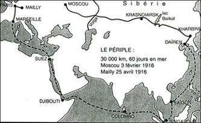
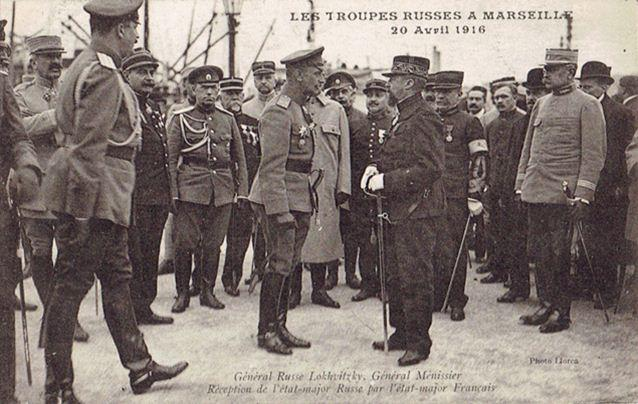

Trop souvent oublié des livres d’Histoire français, le corps expéditionnaire russe débarqué en France en 1916 est pourtant représentatif de l’importance de l’alliance franco-russe mise en place au tournant du 20e siècle pour barrer la route aux menaces pangermanistes en Europe. Retour sur l’histoire de ces hommes qui ont traversé la moitié du globe pour venir combattre en France.
Des confins du Pacifique aux tranchées de Champagne.
Le Colonel Mikhaïl Dmitrievitch Netchvolodoff (en russe : Михаил Дмитриевич Нечволодов)A la fin de l’année 1915, lors de la conférence interalliée de Chantilly, et alors que l’armée française porte quasiment seule le poids de mener des offensives d’envergure sur le front occidental et que les pertes humaines sont de plus en plus importantes, le gouvernement français sollicite la Russie pour qu’elle envoie un des troupes se battre en France, en échange delà fourniture de matériel de guerre à la Russie. La demande initiale de la France est extravagante puisqu’elle propose le transfert d’un demi-million d’hommes.
D’une part la situation de l’armée russe sur le front oriental ne permet d’envisager l’envoi d’un nombre aussi important d’hommes, et d’autre part les moyens nécessaires au transport d’un tel contingent n’existent pas même en mobilisant néanmoins, le Tsar Nicolas II valide la création d’un corps expéditionnaire de près 50 000 hommes qui seront acheminés sur le front français mais aussi sur le nouveau front des Balkans à Salonique.
L’armée russe aura la charge de constituer quatre brigades d’infanterie sous commandement russe mais qui seront dotés de matériels français (à l’exception des uniformes) et transportés jusqu’en France par la Royale. Les dépenses liées à l’entretien des troupes demeurent à la charge du gouvernement russe. Dès le mois de janvier 1916, la 1re brigade russe spéciale (B.S.R.) est créée et placée sous le commandement du général Lokhvitzki. Elle comprend deux régiments : le 1er régiment recruté à Moscou est commandé par le Colonel Netchvolodoff, le 2e recruté dans la région de Samara est aux ordres du Colonel Diakonoff, soit un total de 8 942 hommes et officiers. les marines des deux pays.
Les hommes sont choisis parmi les recrues de 21 à 25 ans, sachant lire et écrire, et volontaires pour participer à cette expédition. Le 3 février, les premiers éléments qui Moscou par le train en direction de l’Extrême-Orient russe, à Dairen (Dalian aujourd’hui) en Mandchourie.
Débarquement des troupes russes en France

Défilé de la 1ère Brigade russe dans les rues de Marseille. Avril 1916
Le 29 février, le « Latouche Tréville » est le premier transport à appareiller pour un périple de deux mois en direction de Marseille. Le 16 avril, dans un climat très chaleureux, les premiers soldats russes débarquent sur la terre de France. Tous les observateurs soulignent le caractère exemplaire de cette nouvelle unité. Après avoir perçu leurs fusils Berthier M. 1907-15, les troupes russes sont rassemblées au camp Mirabeau pour célébrer la Pâque orthodoxe le 23 avril. Elles sont ensuite acheminées vers le camp de Mailly en Champagne pour y recevoir une instruction complète afin de se familiariser avec les spécificités du combat de tranchées du front occidental.
Elles reçoivent également tout le matériel nécessaire à une troupe combattante : roulantes, casques Adrian, masques à gaz, mitrailleuses, téléphones de campagne et ambulances. La brigade est intégrée à la 4e armée du général Gouraud, de retour de convalescence après sa terrible blessure reçue aux Dardanelles. Avant son départ pour le front, les Russes reçoivent la visite éminemment symbolique du Président de la République Raymond Poincaré, qui décore à cette occasion le général Lokhvitski, en le faisant Commandeur de la Légion d’Honneur.
Fin juin 1916, la 1re brigade est enfin envoyée au front, dans le secteur entre Suippes et Auberive. En pleine bataille de Verdun et à la veille de l’offensive franco-britannique dans Somme, elle ne participe à aucun combat majeur car c’est un secteur calme du front. Cela permet aux hommes de se familiariser avec la vie dans les tranchées et d’achever l’aménagement du secteur. Seule distraction majeure pour les Russes, le 14 juillet, ils ont l’insigne honneur de participer au traditionnel défilé sur les Champs-Elysées à Paris.
Défilé des troupes russes à Paris
Comme à Marseille lors de leur débarquement, ils suscitent l’enthousiasme et l’admiration des Parisiens. Deux jours plus tard, les Allemands lancent une attaque limitée contre les unités de la 1re brigade restées aux tranchées ; 13 morts côté russe pour une centaine d’Allemands tués et 10 prisonniers capturés.
Drapeau du 2ème Régiment de la 1ère brigadeEn août, la 3e brigade aux ordres du général Marouchevski rejoint la France et débarque à Brest en provenance d’Arkhangelsk. Composée elle aussi de deux régiments Jusqu’au mois d’octobre, elle suit le même parcours de formation que la 1re brigade au camp de Mailly avant de relever celle-ci le 16 octobre.
Les Français sont dithyrambiques à l’égard de leurs alliés russes qui, malgré le calme qui règne dans leur secteur, multiplient les patrouilles et autres coups de mains contre les Allemands. A la fin 1916, les Russes ont déjà perdu 102 officiers et soldats principalement tués au combat.
Les troupes russes défilent devant le général Henri Gouraud et le général Nikolaï Lokhvitski au camp de Mailly en octobre 1916
L’offensive Nivelle
Au début de l’année 1917, les deux brigades russes, désormais réunies, sont rattachées à la 5e armée française en vue de la grande offensive prévue par le général Nivelle dans le secteur du Chemin des Dames. Elles doivent néanmoins faire face à un événement inattendu pour elle : le 15 mars, le Tsar Nicolas II a abdiqué suite à la Révolution de Février. Cette nouvelle, d’abord tenue secrète, leur parvient finalement le 12 avril, à quelques jours seulement du début de l’offensive.
Malgré la création d’un soviet qui se réunit le 15 avril dans la cave du château de Saint-Thierry, soit la veille du jour J, les soldats votent à une courte majorité pour rester au front et combattre, et ce malgré les rumeurs qui ne manquent pas de circuler sur l’éventualité de la fin de la guerre pour la Russie.
Le 16 avril, la 1re brigade qui occupe le flanc gauche du 7e corps d’armée face à Courcy, la butte de Brimont et le fort de Brimont. A 6 heures, alors qu’il neige, les soldats russes de la première vague d’assaut sortent confiants de leurs tranchées. Comme sur la Somme en juillet 1916, on leur a dit que la préparation d’artillerie qui a duré sept jours avait anéanti les positions allemandes. Malheureusement ce n’est, une fois de plus, pas le cas. Un barrage d’artillerie allemand les cueille à découvert dans le no man’s land. Malgré les pertes, les fantassins russes chargent vers les lignes allemandes qui sont effectivement bouleversées. Même les abris profondément creusés sont transformés en tombes pour leurs malheureux occupants. Les hommes du 1er régiment poursuivent leur attaque en direction de Courcy malgré le feu de l’artillerie allemande, tandis que sur leur gauche, le 2e bataillon du 2e régiment parvient à atteindre le canal de l’Aisne à la Marne.
Lorsque le 1er bataillon du 1er régiment aborde les ruines fumantes de Courcy, il est accueilli par le feu nourri des mitrailleuses allemandes solidement retranchées dans les caves transformées en casemates et que l’artillerie française n’a pas pu réduire au silence. Le chef du bataillon prend alors la décision de contourner le village par le nord pour l’encercler. Les Allemands se battent pied à pied dans de sanglants combats de rue où chaque ruine est copieusement grenadée pour réduire ses occupants au silence. A la fin de la journée, les Allemands occupent toujours la verrerie de Courcy située de l’autre côté du canal et d’où ils tirent sur les positions russes dans le village.
Sur la droite, le 3e bataillon du 2e régiment tente de parvenir lui aussi au canal en progressant à l’est de Courcy et d’établir la liaison du sa droite avec le 151e RI. Il est stoppé à la hauteur du moulin de Courcy par un réseau de barbelés à peine entamés par la préparation d’artillerie. Ce réseau couvre les accès d’un point d’appui allemand hérissé de mitrailleuses (5 ou 6 mitrailleuses servies par une trentaine d’hommes), et baptisé le « Fort Carré ». Malgré plusieurs assauts où les soldats russes font preuve d’un héroïsme sans faille, le point d’appui ne peut être pris.
Les combats vont se poursuivre pendant deux jours, le commandement français aveuglé par son obstination décide de relancer l’attaque dès le 17 avril. Malgré les contre-attaques allemandes, le village de Courcy finit par tomber entièrement entre les mains des Russes qui font 750 prisonniers. A l’est du village, le « Fort Carré » est enfin conquis de haute lutte le 18 avril au matin.
Tranchée russe sur le front françaisPendant ce temps, toujours le 16 avril, le 3e bataillon du 6e régiment appartenant à la 3e brigade est engagé au sein de la 40e DI lors de l’attaque du Mont de Sapigneul et de la côte 108 près de Berry-au-Bac. Le bataillon est encadré par le 251e RI. Quatre compagnies russes participent à l’assaut initial, deux au sein du 4e bataillon et deux au sein du 6e. L’élan des Russes est formidable malgré le feu de l’artillerie allemande et les réseaux de barbelés parfois intacts qui leur barrent l’accès à la première ligne ennemie. Au prix de terribles pertes, ils s’emparent de leurs deux objectifs. Mais en fin de journée, les munitions commencent à manquer et le terrain si chèrement conquis doit être abandonné. Le 19 avril, le 3e bataillon renforcé par deux bataillons du 5e régiment de la 3e brigade relance à l’assaut sur le Mont-Spin tandis que le 114e RI tente de reprendre le Mont-Sapigneul. Malgré les tirs dévastateurs des mitrailleuses allemands, les Russes parviennent à enlever les deux premières lignes de défense. Le bataillon russe au centre du dispositif atteint même la troisième ligne allemande et le bois en dentelle sur la gauche du Mont-Spin. L’objectif est à portée de main mais les Russes emportés par leur élan n’ont pas pris le temps de nettoyer les abris profonds des premières lignes allemandes. Ils sont pris à revers par les Prussiens de l’IR 49 et 155 qui leur tirent dans le dos. C’est un véritable massacre. De rares survivants parviennent à rejoindre leur ligne de départ.
En trois jours, les deux brigades russes ont perdu 5 183 hommes, tués, blessés ou disparus sur un effectif initial de 8 000 hommes. Pour leur courage exceptionnel, elles sont toutes les deux citées à l’ordre de l’armée. Relevées le 20 avril par des unités françaises, les deux brigades sont retirées du front et envoyées au camp de La Courtine pour s’y reposer. Elles ne participeront plus à aucun combat suite à la mutinerie d’une partie des troupes en septembre 1917. A l’issue de cet épisode tragique qui fera une centaine de morts dans les rangs russes, les unités sont dissoutes, les hommes désarmés et 549 soldats sont emprisonnés. Quelques centaines d’hommes désireux de poursuivre le combat rejoindront la Légion Etrangère ou la Légion d’honneur russe (LHR) intégrée à la Division marocaine dans laquelle ils se couvriront de gloire jusqu’à la fin de la guerre.
Partager cette page